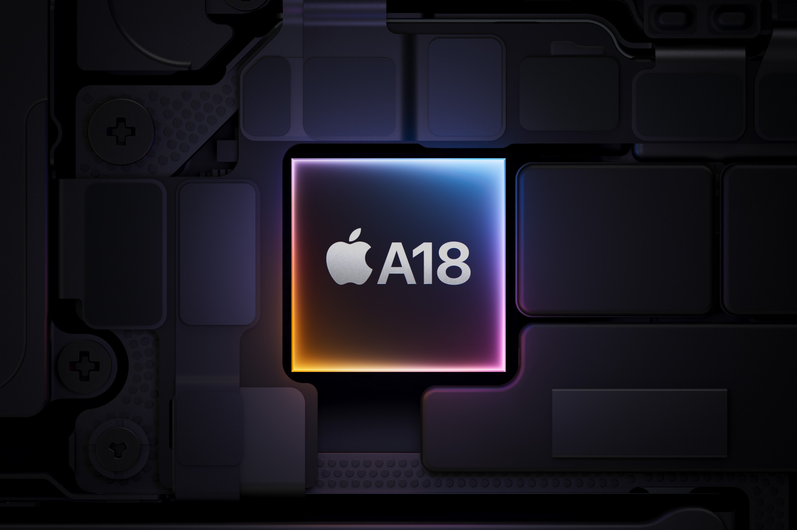

iPhone 16

Visão geral
O iPhone 16 é o mais novo lançamento da Apple. Com um design inovador e tecnologia de ponta, ele é o smartphone mais poderoso do mundo.
Processador
O iPhone 16 é equipado com o processador A18 Bionic, um chip feito sob medida para o iPhone 16. Ele está duas gerações à frente do A16 Bionic do iPhone 15 e é o grande responsável por recursos avançados para fotos e vídeos, como o Controle da Câmera.
Câmera

Agora, suas fotos e vídeos vão arrasar também no quesito agilidade. Com o Controle da Câmera, você tem acesso mais fácil e rápido às ferramentas e recursos. É só deslizar o dedo na parte lateral do aparelho para acessar as funções.
Bateria
O design interno do iPhone 16 foi feito para acomodar uma bateria maior, que trabalha em conjunto com o chip A18 e dá um grande salto em duração, mesmo com tantos recursos inovadores. Você joga, maratona e estica até a hora que for.